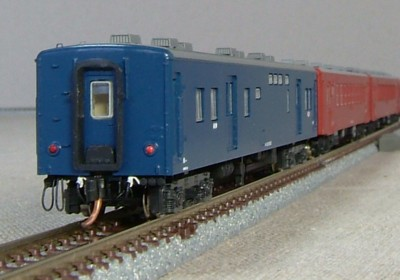
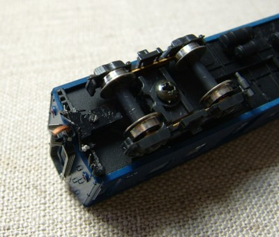
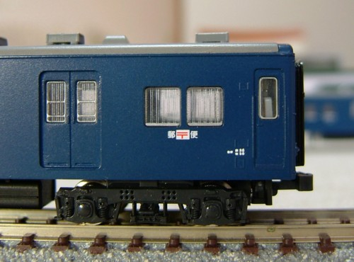

クロスポイント
クロスポイントのキット組み立てです。
妻面手すりの別パーツ化・ベンチレータの別パーツ化などの定番の加工をしています。
2両組んだのですが、そのうち端梁を作りこんでいる1両を公開します。

50系との連結です。
この組み合わせはあまり多くなかったように思いますが、
同系列だけに良く合います。

端梁です。
元空気ダメ引き通し管の白が目立ちます。
床板はKATOのナハフ11のものを、水タンクだけを残して使っています。
ついでにライトユニットを利用してテールライトを点灯化しました。

側面の表記です。
郵便マークは、キングスホビーのものが一番鮮やかでよいようです。